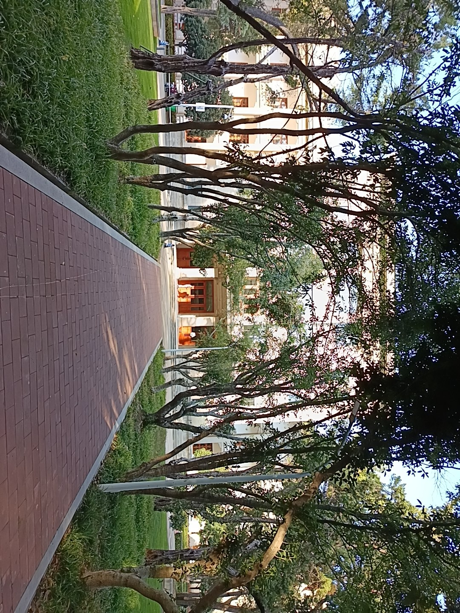
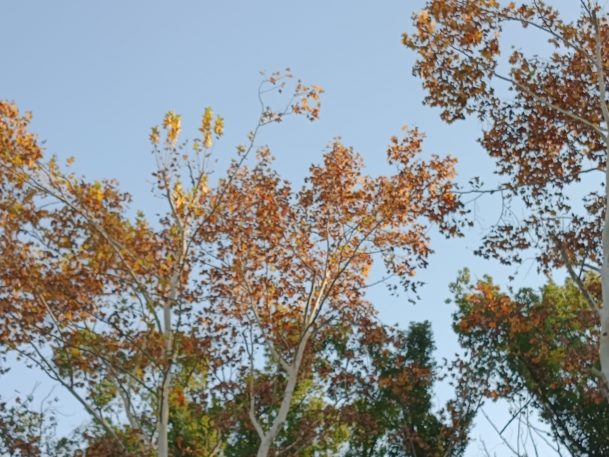
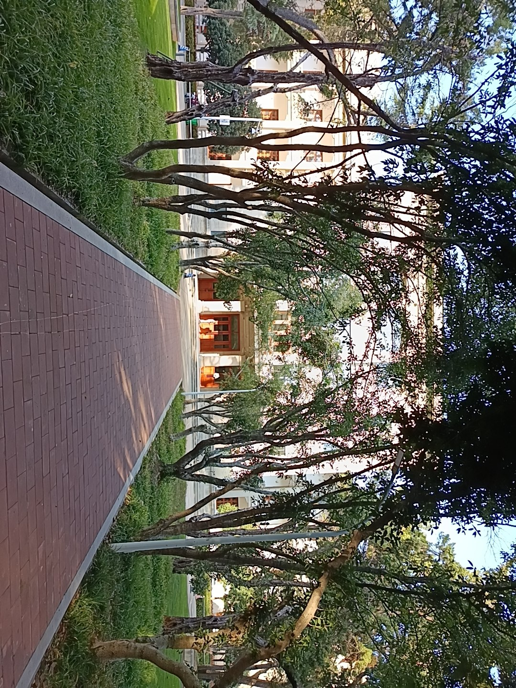
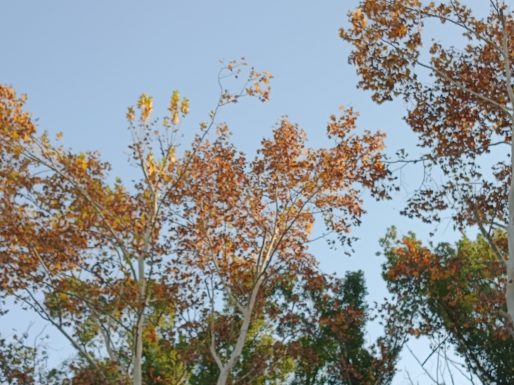

武汉旅游
黄鹤楼：位于武昌蛇山，是中国著名的古建筑之一，享有“天下江山第一楼”的美誉。 东湖风景区：中国最大的城市湖泊之一，风景秀丽，是武汉市民休闲娱乐的好去处。 武汉长江大桥：中国第一座自行设计、施工的公铁两用桥，是武汉的标志性建筑之一。 汉口江滩：位于汉口沿江大道，是武汉市民休闲娱乐的重要场所，夜景尤为美丽。 我今天分享的图片是华科一个寻常角落的风景，武汉哪里都很美。
 黄鹤楼：位于武昌蛇山，是中国著名的古建筑之一，享有“天下江山第一楼”的美誉。 东湖风景区：中国最大的城市湖泊之一，风景秀丽，是武汉市民休闲娱乐的好去处。 武汉长江大桥：中国第一座自行设计、施工的公铁两用桥，是武汉的标志性建筑之一。 汉口江滩：位于汉口沿江大道，是武汉市民休闲娱乐的重要场所，夜景尤为美丽。 我今天分享的图片是华科一个寻常角落的风景，武汉哪里都很美。
 